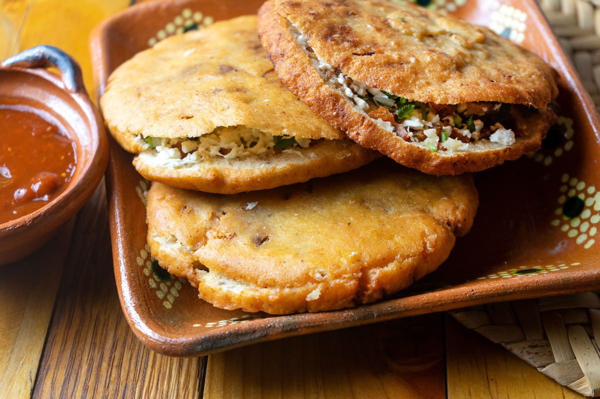

Gorditas

..
Gorditas, which translates to "little fat ones" in Spanish, are a traditional Mexican dish that consists of thick, round cornmeal cakes stuffed with a variety of savory fillings. The gordita dough is typically made from masa harina (corn flour), water, and sometimes other ingredients like fat or lard, which contribute to the dish's name.
The preparation of gorditas involves several steps:
- Dough Preparation: The masa harina is mixed with water (and sometimes other ingredients) to form a thick dough. This dough is divided into small portions, which are then shaped into thick, round patties.
- Cooking: The gordita patties are cooked on a griddle or comal until they are golden brown and cooked through. This gives them a slightly crispy exterior while maintaining a soft and doughy interior.
- Splitting: Once cooked, the gorditas are sliced open horizontally, creating a pocket or space for the fillings.
- Filling: Gorditas are filled with a variety of ingredients, such as seasoned meats (such as shredded beef or pork), beans, cheese, lettuce, salsa, guacamole, and other toppings. The choice of fillings can vary depending on regional preferences and personal taste.
Back Home